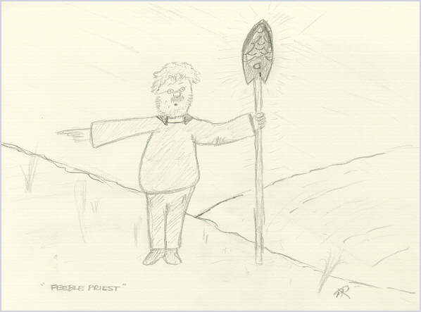

| |

| |

| |

| |

| |

|
Gothan sighed as he trudged forth another nile. The wise one was indeed wise, albeit without any sense of direction. Armed with his withered nompass, he headed narth towards the nipolar star.
Night fell, and Gothan once again began to grow weary. He conceded to himself that he was in need of re-training. In all the cosmos he had never before understood the true value of health. That is, until now, as his trembling knees folded sharply beneath him. He slept where he fell.
Nine niles away, on the other side of the clarp-barrier, Opus observed the traveller's progress. He chuckled to himself. Did this lowly dog herder really conceive himself as the answer to the question of retribution? Could he really be attempting to find his way back? He glanced to the sarth towards the Portal of Pindle, and the plasmoic shimmer that surrounded it. The portal was safe, and the barrier inpenetrable. Opus started to laugh. He laughed out loud. Before long, he was roaring with mirth at the idea that any mortal could challenge his authority now that the Sceptre of Brahm was in his power.
His laughter echoed across the wastes upon which Gothan now crawled. An unholy cacophony that sent shivers up Gothans two spines. He felt cold and unwell. Should he give up the fight? What difference would he make anyway. Opus had already won. He had the sceptre. A far larger utensil than his own. Gothan felt more weary than he had previously considered possible. It seemed that the tired and eternal sleepyness of all the dead was upon him. He smelled his own death, imminent and ghastly. He would die alone on these wastes, in sight of the portal, but at an unreachable distance. He would die cold. He would die alone. . .
"Boo Ra, Jampar, Larrrrrr", boomed a low voice from above his collapsed self. "Yiyous blessay espiritu domini dominar rectus erratum verbatum tyranus aroust do clamber perchansus evasion lessarus mea maxima culpa zimmer rah!!" The chant of the priest recharged his flailing battery in an instant, and he rose to his feet to face the being that stood before him.

"My son", said the figure, in a kindly tone, "You must fight the power of evil at all times, even when you feel that your strength is no more. For there is always more. By the power vested in me, I bless you in the name of Ra, Ka, Sa, Ta, and Joobah"
"Who are you?", Gothan asked inquisitively, "and why do you help me so?"
"I am known as FeeblePriest, although you may call me F. I have power beyond, and will help you in your quest to find a gateway back into the mortal realm."
He continued.
"May I venture forth a suggestion, that you quest the second portal"
Gothan was taken aback. He stood aghast for a couple of days, with the priest tending to his food and water. When he regained control, Gothan immediately went into a state of shock. "How could this be?" he exclaimed, "The Bah-Grars only ever created one temporal connection between the states".
"You are right, my friend, in your assessment that the Bah-Grars only created the one portal. They did. However, a second portal was opened the moment Opus seized the Sceptre between his paws. That portal, known as the Portal of Peave, exists only in my imagination, but nevertheless permits travel between the netherworld and the everworld of Biradel"
Gothan scratched both heads at the same time. This was an action that he reserved for periods of extreme confusion such as this. "So how do I access?" he responed, still scratching.
"You must pass into my mind, and beyond" was the reply.
"How exactly do you propose that I should do this? Surely you only have to picture me in your mind, and I will be there" quipped Gothan.
"IDIOT!". The priest spun in a rage. "To enter the mind of another, you must drink from the Chalice of Sharmoom, and swallow at precisely the same instant that you collide with my head at a speed of not less than sound."
Gothan agreed, and as he did so, the priest produced two identical vessels. Decorated in an unknown orb, these cups held a deep blue something of which Gothan was unsure.
"I must first bless this wone" said the priest. He stood on three legs to perform the ceremony. "Biranoo turradar semolatoo karachee vivasion dominee dominah soluti comsummi ferrous nirvana espiritu grandous! You may drink, but take a run up."
Gothan edged backwards until he was roughly 0.3479 niles woost of the priest. From this distance he began to canter, then gallop, until only seven of his legs remained on the surface at any one instant. Faster, faster, faster he trotted, getting ever closer to FeeblePriest as he went. Then suddenly there was impact. As the two beings collided, Gothan swallowed. The priest swallowed, and Gothan found himself in the mind of the priest. There was much dirt here. Gothan decided that FeeblePriest was probably not a priest at all, and just as he was turning to go back, the priest sneezed and Gothan was projected laterally out into the world of Biradel.
After a double take, he realised that he was seated at the gates of Biradel, and that the strange rumbling noise he heard was the closing of the gates.
"You must fight the holder of the sceptre if you ever want to return here!" came a shout from beyond the gate. "You are banished until then". The clatter of hooves beyond the gate. Gothan clattered his own in angry protest, but it was too late. They had closed the latch. But that was the least of his troubles. Opus had heard the commotion, and had left the first portal in search of the one who had achieved this anomoly. It was time for a confrontation.
 Story Index
Story Index |
top of page
 |

 Previous Chapter Previous Chapter |
Next Chapter  |